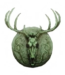

An Introduction to the Whimsical World of Moonstone
Moonstone™ is a character-driven fantasy skirmish game for 2-4 players set in the mysterious world of Tauber.
Tauber's population is split into four factions:

and this is just some of the incredible biodiversity that calls this strange but wonderful place home.
The most precious resource known to the inhabitants of Tauber are the Moonstones, so called due to the way they emerge from the ground unpredictably during the night, only to be dissolved by the emerging sun. An enterprising leader can earn a king’s ransom by rooting up the stones before the break of dawn and trading them to the Wizards at the Tower of Grommel, or to their agents.
Players of Moonstone™ must quickly assemble a troupe of adventurers to set forth and collect the stones. Of course as word quickly spreads, you may not be the only ones with your eyes on the prize, and sadly, bloody conflict is almost inevitable.
My Collection
Tap a model to mark it as collected. Press and hold (or right-click) to look at its card.
Your collection is saved on this device. Use the synergies Collected and Not collected in the troupe builder to filter by it. The troupe backup (Troupes tab) includes your collection.
My Troupes
No troupes yet. Create one with the plus, or import one someone shared with you.
Summoned (not counted)
Tap to add a model. Press and hold (or right-click) to look at its card without adding it.
No enemy summons.. YET
Possible summons of the chosen models. Tap one to see its card.